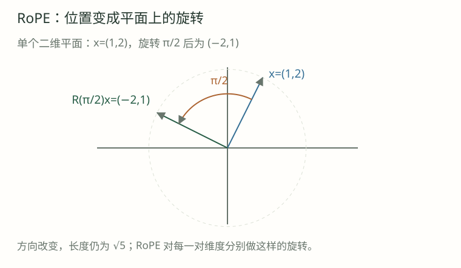

01 · q=(1,2) 旋转 π/2 后是什么？
展开逐步解析
(-2,1)。平方范数仍是 5，用这个简单例子能检查旋转方向和交叉项符号。
旋转 Q 与 K，为什么内积只留下位置差？
把二维向量 x=(a,b) 逆时针旋转 φ，记为 R(φ)x。本课角度使用弧度。

R(φ) = [[cosφ, -sinφ],
[sinφ, cosφ]]
R(φ)·[a,b]ᵀ = [a cosφ-b sinφ, a sinφ+b cosφ]ᵀφ=π/2 时，(1,2) → (−2,1)，平方范数仍为5。
phi = torch.tensor(torch.pi / 2)
x = torch.tensor([1., 2.])
y = torch.stack((x[0]*phi.cos()-x[1]*phi.sin(),
x[0]*phi.sin()+x[1]*phi.cos()))
# y 约为 [-2, 1]旋转满足 R(φ)ᵀ=R(−φ)、R(a)R(b)=R(a+b)，且保持范数。
固定内容向量q、k：位置m的查询为 R(mω)q，位置n的键为 R(nω)k，ω是该平面的频率。
(q′)ᵀk′
= (R(mω)q)ᵀ(R(nω)k)
= qᵀR(mω)ᵀR(nω)k
= qᵀR(-mω)R(nω)k
= qᵀR((n-m)ω)k内积只留下差值 n−m；两位置同时平移c，固定内容向量的点积保持不变。
不同向量与旋转约定可能写成m−n，需同时核对方向与交叉项符号。
令q=(a,b)、k=(c,d)、δ=(n−m)ω，展开得：
qᵀR(δ)k = (ac+bd)cosδ + (bc-ad)sinδ
q=(1,2)，k=(3,4)：ac+bd=11，bc-ad=2
所以 score(δ) = 11cosδ + 2sinδδ=0 时为11；δ=π/2 时为2，也可由 (1,2)·(−4,3)=2 验证。
各自范数保持；两者角度不同，夹角与点积仍可变化。
将d维向量按 (x₀,x₁)、(x₂,x₃) 成对，各平面按 ω_j=base^(-2j/d) 独立旋转。
d=4，base=10000
第 0 对：(x₀,x₁)，ω₀=1
第 1 对：(x₂,x₃)，ω₁=0.01
位置 t=100 时，对应角度分别为 100 弧度与 1 弧度。快频率更敏感于小距离，慢频率变化较缓，多个频率共同参与表示。
RoPE 通常旋转Q/K，不旋转V。配对方式必须与模型权重约定一致。
相对内积性质固定了q/k；真实模型中的内容向量仍受上下文影响。
sin/cos 会振荡，因此 RoPE 不保证分数随距离单调下降，也不保证无限外推。
实现应检查零位置恒等、范数保持和共同平移后的内积不变。
用 float64 与独立参考实现核对，比较浮点值时使用合理误差容忍。
q = torch.tensor([[1., 2., 3., 4.]], dtype=torch.float64)
k = torch.tensor([[2., -1., 1., 3.]], dtype=torch.float64)
a = (rope(q, torch.tensor([2])) * rope(k, torch.tensor([7]))).sum()
b = (rope(q, torch.tensor([102])) * rope(k, torch.tensor([107]))).sum()
assert torch.allclose(a, b, atol=1e-10)实验使用q=(1,2)、k=(3,4)，可改变位置、共同平移和单平面频率。
先作答，再展开解析。
(-2,1)。平方范数仍是 5，用这个简单例子能检查旋转方向和交叉项符号。
转置对应 R(-mω)，同一二维平面旋转可将角度相加，所以合成角度为 -mω+nω。
固定 q/k 与相同频率下保持不变，因为差值仍是 5。实际浮点实现允许极小数值误差。
保持范数描述各向量自身长度；点积还依赖相对角度。两者旋转不同角度时，夹角会改变。
j=1，所以 10000^(-2/4)=0.01。位置 100 时该平面角度为 1 弧度。
都不保证。sin/cos 会振荡，内容向量也变化；训练外位置的表现还依赖训练、数值和任务评估。